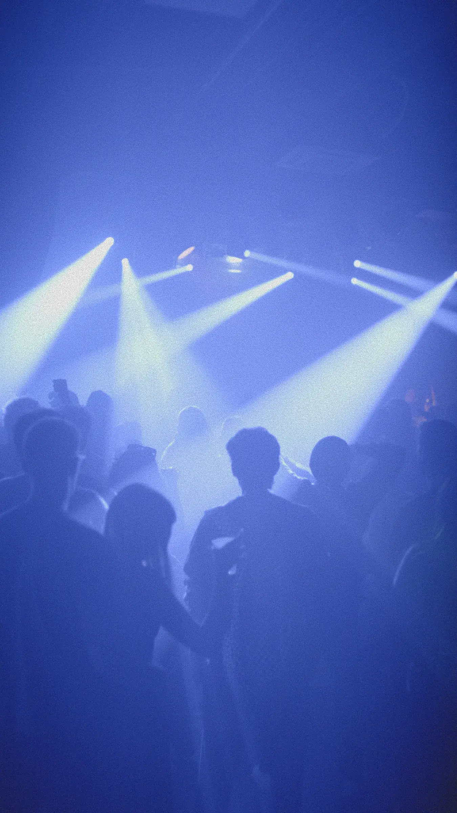
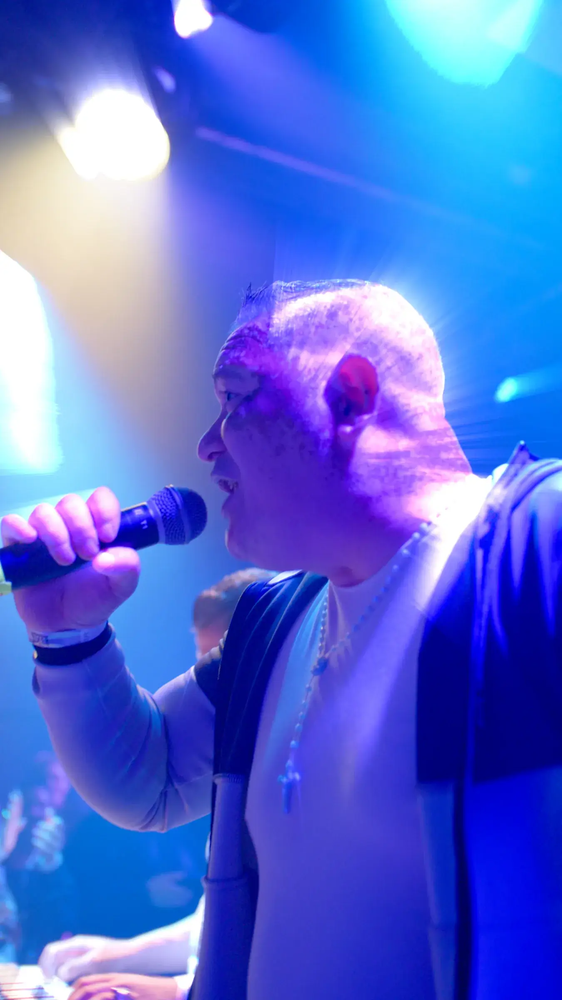
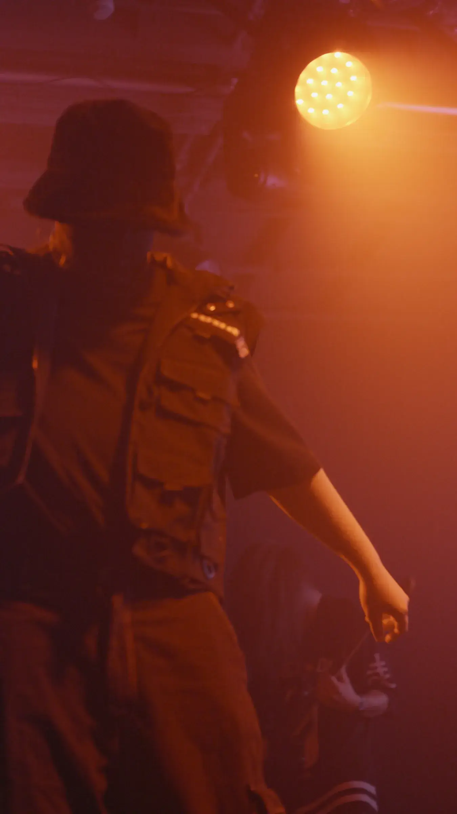
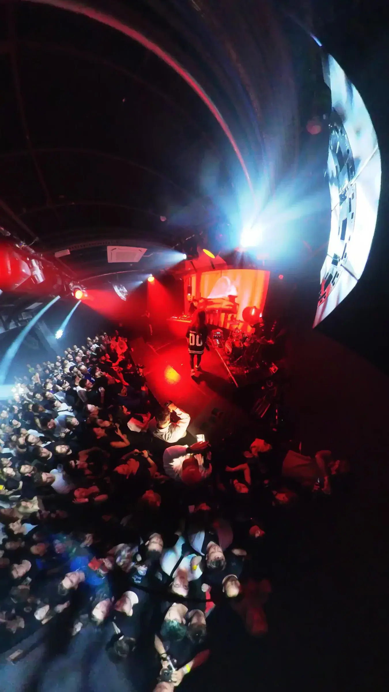

00%

Mi az, ami kimondható? Mi az, amit az algoritmus láthatatlanná tesz? Hol van a határ ma Magyarországon?
A feladat nem klasszikus event recap volt. Az IH a Cenzúra estét viral edit hatású vizuális dokumentációként kezelte: gyors, sűrű, mégis felismerhető atmoszférával.
A fellépők és színpadok között a fókusz az volt, hogy ne csak az esemény méretét, hanem a helyzet saját zaját is visszaadjuk: fények, közönség, átmenetek, arcok, félmondatok. A Cenzúra visszatérő partner: olyan aftermovie, ahol a gyors határidő nem ürügy az üres recapre. A 48 órás turnaround mellett is maradt narratív ív.
A projekt azért fontos, mert megmutatja az IH event dokumentációs oldalát: nem csak interjúban, hanem élő eseményben is lehet kulturális kontextust építeni.

Nem recap. Vizuális dokumentáció.


A kész anyag a buli energiáját sűrítette: nem magyarázta túl az estét, hanem ritmust adott neki. Ez az IH event-anyagainak lényege.
48 óra vágás, mégis van narratív ív. Nem minden event-anyagnak kell recapnek lennie.